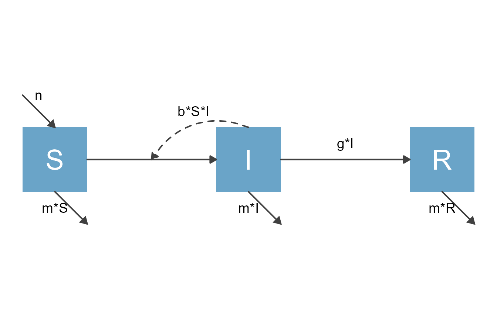
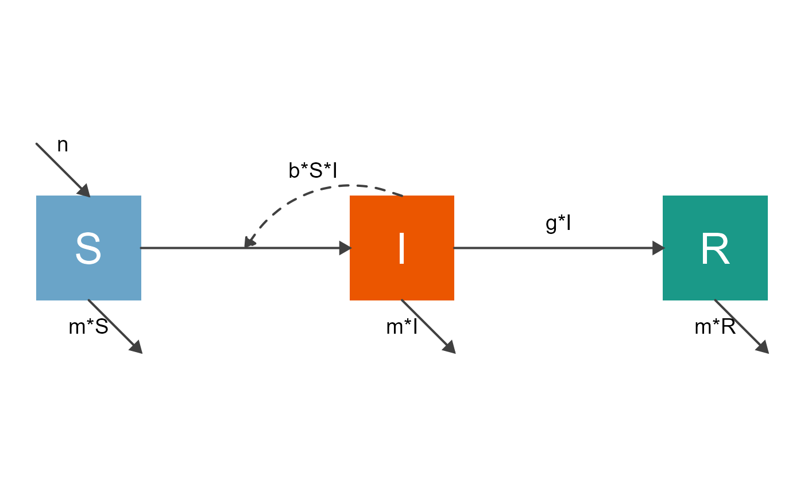
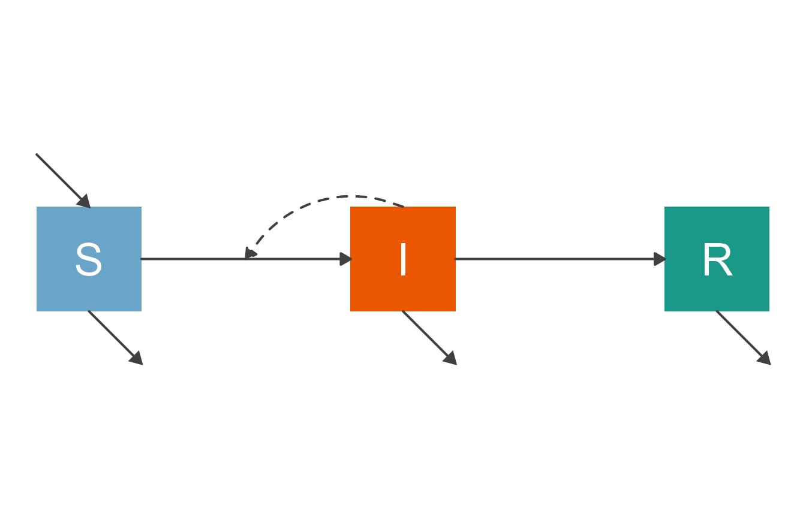
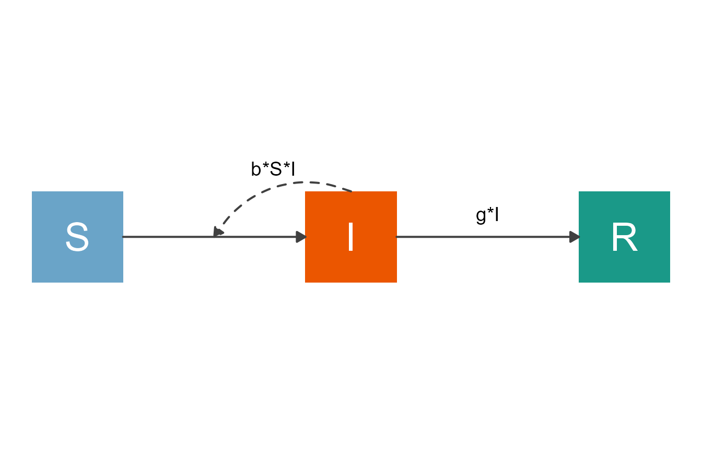
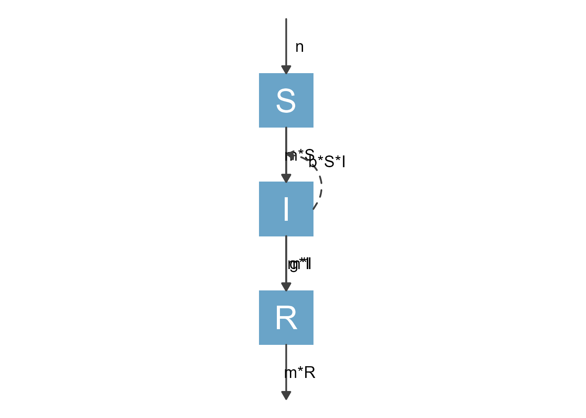
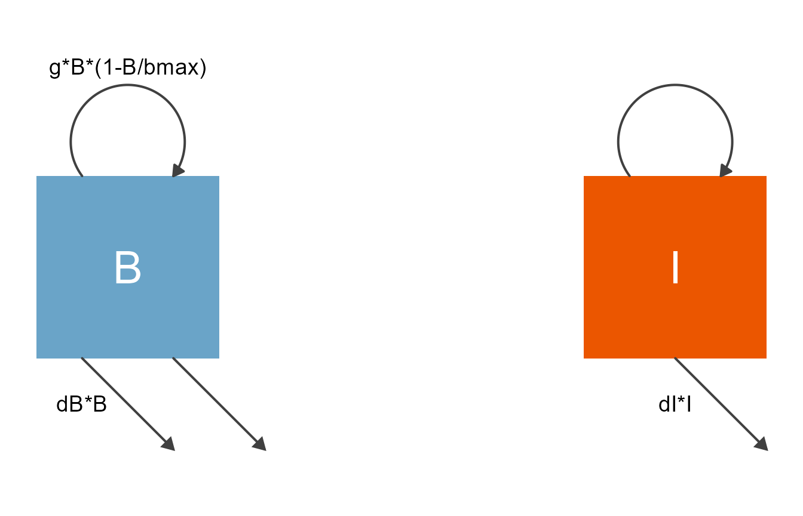
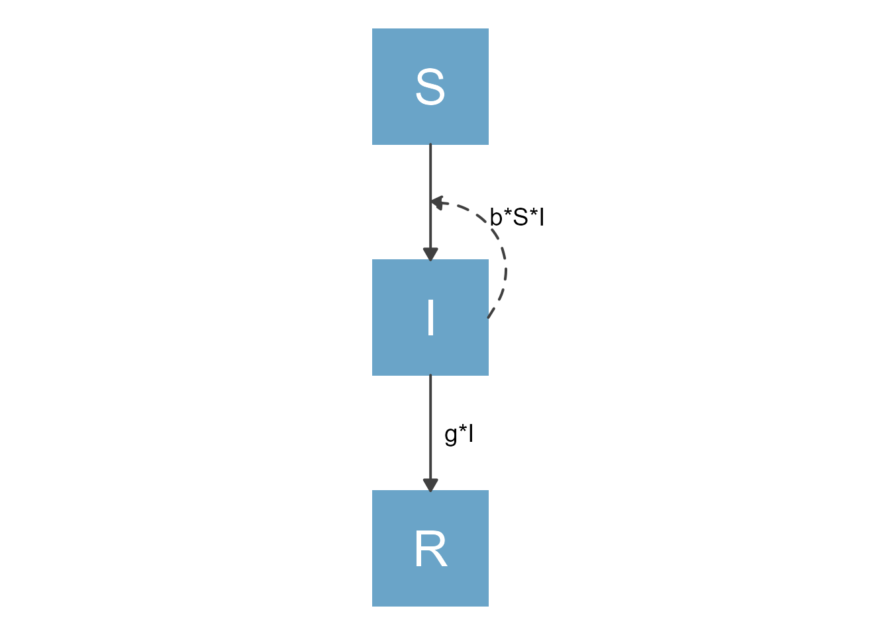

vignettes/B_modify_diagrams_simple.Rmd
B_modify_diagrams_simple.RmdWe assume you went through the getting started vignette and know the basics of using flowdiagramr. In this vignette, you will learn the simplest ways of customizing diagrams. Further vignettes show more advanced ways of customizing diagrams.
make_diagram
The last example of the getting started vignette showed an example on how to customize the diagram by setting verious options when calling the make_diagram function. The help file for the function shows you all the settings you can customize, you can look at it with this command
help('make_diagram')Let’s explore some of those options and what they do.
We’ll first play with an extension of the SIR model. For this extension, we also include natural births and deaths. We assume new births only enter the S compartment at some fixed flow, n, while deaths occur at rate m out of all compartments. The model is specified as follows
# specify the model
varlabels = c("S","I","R")
flows = list(S_flows = c("n", "-b*S*I", "-m*S"),
I_flows = c("+b*S*I","-g*I", "-m*I"),
R_flows = c("g*I", "-m*R"))
sirmodel = list(varlabels = varlabels, flows = flows)First, we need to call prepare_diagram to make the list of data frames needed as input for make_model. We’ll skip over this step again for now, you’ll learn more about these data frames and how to potentially modify them, in a later vignette.
# prepare inputs
sir_diagram_list <- prepare_diagram(sirmodel)Now, let’s produce a basic diagram by calling make_diagram with its defaults.
# make a default diagram
default_diagram <- make_diagram(sir_diagram_list)
plot(default_diagram)
This looks ok, but probably not quite at the level what you want for a publication or presentation. So let’s provide some inputs to the make_diagram function to improve the look.
# make a diagram with adjusted settings
nice_diagram <- make_diagram(
diagram_list = sir_diagram_list,
diagram_settings = list(
node_outline_color = NA,
node_fill_color = c("#6aa4c8", "#eb5600", "#1a9988"),
node_text_color = "white",
node_text_size = 10,
flow_text_color = "black",
flow_text_size = 5,
main_arrow_color = "grey25",
main_arrow_linetype = "solid",
main_arrow_size = 0.7,
interaction_arrow_color = "grey25",
interaction_arrow_linetype = "dashed",
interaction_arrow_size = 0.7
)
)
plot(nice_diagram)
As you can see, it is possible to change the look of the diagram considerably by changing settings.
Let’s look at a few more options that you can configure. By default, flowdiagramr shows all flows and labels them all. While it is generally a good idea to show as much information as possible in your diagram, sometimes having too much detail leads to a messy and hard-to-read diagram. In such cases, not showing certain parts of the model might make sense. You can easily turn on and off several components. The following code shows an example where we turned off labeling of the flows.
# Diagram without labeling of flows
simpler_diagram_1 <- make_diagram(
diagram_list = sir_diagram_list,
diagram_settings = list(
label_flows = FALSE,
external_flows = TRUE,
interaction_label = TRUE,
node_outline_color = NA,
node_fill_color = c("#6aa4c8", "#eb5600", "#1a9988"),
node_text_color = "white",
node_text_size = 10,
flow_text_color = "black",
flow_text_size = 5,
main_arrow_color = "grey25",
main_arrow_linetype = 1,
main_arrow_size = 0.7,
interaction_arrow_color = "grey25",
interaction_arrow_linetype = 2,
interaction_arrow_size = 0.7
)
)
plot(simpler_diagram_1)
In the following example, we are also turning off plotting of the flows that come into or go out of the system from the outside. In this example, those are births and deaths.
# Diagram without external flows
simpler_diagram_2 <- make_diagram(
diagram_list = sir_diagram_list,
diagram_settings = list(
label_flows = TRUE,
external_flows = FALSE,
interaction_label = TRUE,
node_outline_color = NA,
node_fill_color = c("#6aa4c8", "#eb5600", "#1a9988"),
node_text_color = "white",
node_text_size = 10,
flow_text_color = "black",
flow_text_size = 5,
main_arrow_color = "grey25",
main_arrow_linetype = 1,
main_arrow_size = 0.7,
interaction_arrow_color = "grey25",
interaction_arrow_linetype = 2,
interaction_arrow_size = 0.7
)
)
plot(simpler_diagram_2)
Note that if you turn off some component, other options that apply to that component will be ignored. For instance if you turn off labeling of the flows, it does of course not matter what color and font size you give those labels. You can leave those specifications in the code, as we have done above. They will just be ignored.
Let’s use the second example from the Getting started vignette, the predator prey model, to explore some more options.
First, we specify the model again. We did a bit of renaming here, what we called pathogen before is now called bacteria and labeled B and the Immune response is abbreviated as I. Parameter names have been adjusted accordingly, but otherwise it is the same model you already saw.
# specify the model
varlabels = c("B","I")
flows = list(B_flows = c("+g*B*(1-B/bmax)", "-dB*B", "-k*B*I"),
I_flows = c("+r*B*I", "-dI*I"))
ppmodel = list(varlabels = varlabels, flows = flows)Next, we prepare the input list of data frames
# prepare inputs
pp_diagram_list <- prepare_diagram(ppmodel)Finally, we can make a diagram with settings adjusted to our liking.
# make diagram with adjusted settings
diag1 <- make_diagram(
diagram_list = pp_diagram_list,
diagram_settings = list(
node_outline_color = NA,
node_fill_color = c("#6aa4c8", "#eb5600", "#1a9988"),
node_text_color = "white",
node_text_size = 10,
flow_text_color = "black",
flow_text_size = 5,
main_arrow_color = "grey25",
main_arrow_linetype = 1,
main_arrow_size = 0.7,
interaction_arrow_color = "grey25",
interaction_arrow_linetype = 2,
interaction_arrow_size = 0.7
)
)
plot(diag1)
For the next diagram, we are turning off the interactions and only show physical flows, that means processes that actually move some entity (here bacteria and immune response) from one state to the next.
# make another diagram with adjusted settings
diag2 <- make_diagram(
diagram_list = pp_diagram_list,
diagram_settings = list(
node_outline_color = NA,
node_fill_color = c("#6aa4c8", "#eb5600", "#1a9988"),
node_text_color = "white",
node_text_size = 10,
flow_text_color = "black",
flow_text_size = 5,
main_arrow_color = "grey25",
main_arrow_linetype = 1,
main_arrow_size = 0.7,
interaction_label = FALSE,
interaction_arrow_color = "grey25",
interaction_arrow_linetype = 2,
interaction_arrow_size = 0.7
)
)
plot(diag2)As you can see, not showing the interactions doesn’t produce a very useful diagram, so in this (and most cases), not showing interaction terms is maybe not the best idea.
There is another simple, but likely often quite useful way you can make adjustments to the model plot. You previously learned that to specify a model, you need to set up a list that contains at minimum the elements varlabels and flows. That’s what we used so far. It is possible to supply a few additional elements, namely the element varnames which contains the full names for each variable/compartment and an element varlocations, which contains a matrix showing the grid-based arrangement of the compartment boxes. Let’s see it in action.
Here is an example for the SIR model you saw previously, now with the additional two arguments just introduced.
varlabels = c("S","I","R")
flows = list(S_flows = c("-b*S*I"),
I_flows = c("+b*S*I","-g*I"),
R_flows = c("+g*I"))
varnames = c("Susceptible","Infected","Recovered")
varlocations = matrix(data = c("S", "", "R",
"", "I", "" ),nrow = 2, ncol = 3, byrow = TRUE)
sirmodel = list(varlabels = varlabels, flows = flows, varnames = varnames, varlocations = varlocations)The varnames argument is self-explanatory. If you supply this argument, you can have the variable names be shown in the plot by setting use_varnames = TRUE when calling the make_diagram function.
The varlocations argument needs some explanation. What this allows you to do is to define a grid and place the compartments at specific locations. This is often necessary when you create more complicated models since the automated placement of the variables/nodes by make_diagram is likely not ideal. In the above example, we defined a grid with 2 rows and 3 columns and placed the S and R compartments in the left and right corner of the top row and the I compartment in the middle of the bottom row. All other slots are empty.
You can take this extended specification of the model and feed it to the diagram preparation and generation functions, like so.
# prepare inputs
sir_input_structure <- prepare_diagram(sirmodel)
# make diagram
# sir_diagram <- make_diagram(sir_input_structure, use_varnames = TRUE)
sir_diagram <- make_diagram(sir_input_structure)
plot(sir_diagram)
Note that we also provided the make_diagram function with an option that specified that we wanted to use the variable names to label the boxes instead of the labels/abbreviations.
Let’s do one more example that might come up somewhat often, where you need a figure that is mostly vertical. We can do this for the SIR model by adjusting the varlocations matrix as follows (for completeness, the code shows the whole model setup again):
varlabels = c("S","I","R")
flows = list(S_flows = c("-b*S*I"),
I_flows = c("+b*S*I","-g*I"),
R_flows = c("+g*I"))
varnames = c("Susceptible","Infected","Recovered")
varlocations = matrix(data = c("S", "I", "R"), nrow = 3, byrow = TRUE)
sirmodel2 = list(varlabels = varlabels, flows = flows, varnames = varnames, varlocations = varlocations)
sir_input_structure2 <- prepare_diagram(sirmodel2)
sir_diagram2 <- make_diagram(sir_input_structure2)
plot(sir_diagram2)
With the approach just discussed, you can tweak the look of the diagram a good bit. This might give you a diagram that’s good enough for what you want. However, at times you might want to make further changes. For instance you might want to tweak the placement of the boxes and arrows or add some extra text somewhere on the diagram. flowdiagramr gives you ways of doing this.
After you have exhausted the modifications described here, and need to make further changes, we recommend as a next step to tweak the input structure that is produced by the prepare_diagram function before sending it to the make_diagram function. This gives you a good bit more flexibility in adjusting the model, and is not that difficulty to do. This is described in the next vignette.
Finally, it is possible to obtain the underlying code that produces the plot and manually adjust anything you like. This is most flexible, but also requires the most manual intervention. We get to that after you have gone through the next vignette.